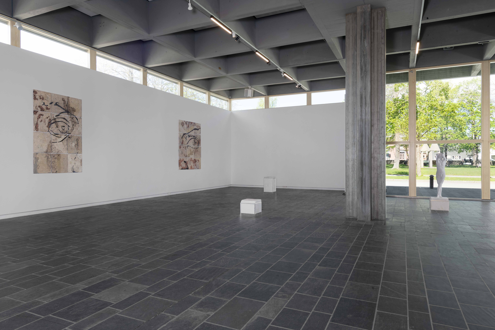
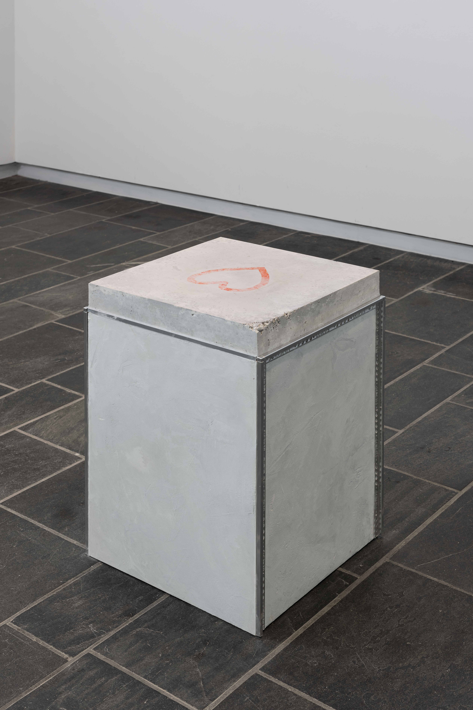

Flameboyat Gamine
Skiens Kunstforening, Skien, Norway
03.05. - 07.06.25
Flameboyant Gamine, 2025, installation veiw
Flameboyant Gamine, 2025, installation veiw
Flameboyant Gamine, 2025, installation veiw
Flameboyant Gamine, 2025, installation veiw

Flameboyant Gamine, 2025, installation veiw
Flameboyant David #1, 2025, plaster, rabbit glue, pigment, linseed oil, cap nut, bolt,
184x246 cm
Flameboyant David #1, 2025, plaster, rabbit glue, pigment, linseed oil, cap nut, bolt,
184x246 cm
Flameboyant David #2, 2025, plaster, rabbit glue, pigment, linseed oil, cap nut, bolt,
184x246 cm
Flameboyant David #2, 2025, plaster, rabbit glue, pigment, linseed oil, cap nut, bolt,
184x246 cm
Flameboyant David #2, 2025, plaster, rabbit glue, pigment, linseed oil, cap nut, bolt,
184x246 cm
Flameboyant Gamine, 2025, metalciment, perlite stone, rebar, aluminum strips, veneer,
186x53x50 cm
Flameboyant Gamine, 2025, metalciment, perlite stone, rebar, aluminum strips, veneer,
186x53x50 cm
Flameboyant Gamine, 2025, metalciment, perlite stone, rebar, aluminum strips, veneer,
186x53x50 cm
Flameboyant Gamine, 2025, metalciment, perlite stone, rebar, aluminum strips, veneer,
186x53x50 cm
Flamboyant Genesis #1, 2025, metalciment, perlite stone, AcrylicOne, aluminum strips, veneer, image transfer, 62x53x50 cm
Flamboyant Genesis #1, 2025, metalciment, perlite stone, AcrylicOne, aluminum strips, veneer, image transfer, 62x53x50 cm

Flamboyant Genesis #4, 2025, metalciment, perlite stone, AcrylicOne, aluminum strips, veneer, image transfer, 80x53x50 cm
Flamboyant Genesis #2, 2025, metalciment, perlite stone, AcrylicOne, aluminum strips, veneer, image transfer, 80x53x50 cm
Flamboyant Genesis #3, 2025, metalciment, perlite stone, AcrylicOne, aluminum strips, veneer, image transfer
32x53x50cm
Flamboyant Genesis #3, 2025, metalciment, perlite stone, AcrylicOne, aluminum strips, veneer, image transfer
32x53x50cm

Flamboyant Genesis #3, 2025, metalciment, perlite stone, AcrylicOne, aluminum strips, veneer, image transfer
32x53x50cm
”Er der virkelig hjerter i Davids øjne?”
”David er høj, slank og har en defineret fysik med skarpe lige linjer. Han har et symmetrisk og stærkt ansigt med markante træk og udstråler styrke, selvsikkerhed og balance mellem maskulin energi og skønhed. Pupillerne til David er hjerteformede, dette kan dog komme fra et rent praktisk formål for at skabe den bedste dybde og lysvirkning. De er derfor ikke nødvendigvis bevidst blevet formet som hjerter."
”Som du beskriver ham, er han så en soft dramatic?”
”Ja!”
†Hvad med Århuspigen, hvilken type er hun?”
”På grund af hendes dynamik og den næsten legende energi hun udstråler, passer hun godt til Flamboyant Gamine, selvom denne type normalt er lidt mere kantet. Århuspigen er jo en ung kvinde med lang, slank krop og relativt bløde linjer, som skaber en følelse af lethed og bevægelse. Hendes krop er ikke særlig lang eller dramatisk i proportionerne, men harmonisk og ungdommelig, sammen med de rundere former, giver det et feminint udtryk og en energisk figur.”
”Så denne type kan sammenlignes med Flamboyant Gotik; drama i små portioner, uventede kontraster, og leg med linjer og ornamentik.”
”Ja det kan man godt sige. En vild tanke: hvis en Flamboyant Gamine skulle være en bygning, kunne det være en lille, skarpkantet, gotisk kirke med neonfarvet glas og lidt attitude 😠Altså, den dér “jeg er lille, men du ser mig”-energi.”
”Spændende tænkning. Hvilken type vil du siger har hjerter i øjnene?”
”Flamboyant Gamine.”
I udstillingen ser vi to vægarbejder i stuccoteknikken scagliola. Hver af dem viser et øje, som sammen skuer ud over lokalet med deres hjerteformede pupiller. Hjertesymbolet går igen i den figurative skulptur, som forestiller en ung mand, der bærer samme navn som udstillingen; Flamboyant Gamine. Dette navn er hentet fra Kibbe kropstypesystem, skabt i 1980erne for at hjælpe folk med at forstå deres naturlige kropstype, og hvilket tøj de vil klæde bedst. I lokalet står der yderlige fire piedestaler med hver sin klods metalciment. På hver af disse er der et aftrykt, som forestiller variationer af en krydsning mellem et hjerte og et fodaftryk. Rundt piedestalernes kanter er der aluminiumslister, hvor ordet ”genesis” repeteres, som betyder begyndelse. Om det er begyndelsen til en skulptur, en arkitektonisk stilart eller noget helt tredje kan den enkelte gruble over, alt imens kan man kigger på definitionen af en Flamboyant Gamine, der beskrives som dramatisk, kantede og energisk, med en tendens til at fremhæve det unikke og usædvanlige.
Photo: Kunstdok / Istvan Virag
The exhibition was supported by Arts and Culture Norway and Norske Kunstforeninger.
links:
Art Viewer